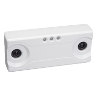

Device
SECURE
SS-2300F／ステレオカメラ
販売終了品
最先端のステレオビジョン技術を採用した3Dカメラを搭載。
データ分析回路も内蔵しているので、このカメラ1台で様々な測定と分析が可能に。
SS-2300Fは、高精度の画像解析を実現する画期的な映像デバイスです。
3Dカメラによる画像データの取得と分析をカメラ本体内でリアルタイムで実行します。
設置場所に左右されず高精度のデータ収集と分析を可能にし、
人数計測、動線分析、滞留分析に威力を発揮します。
希望小売価格：250,000円（税抜）
- 3Dカメラ
- 屋外対応
- PoE給電対応
- リモート機能
- AC電源対応
- 32ゾーンまで設定可能
- デジタルI/O
商品の特長
最先端の技術を搭載
最新のステレオビジョン技術によって得られた3D情報により、子供や大人、ショッピングカート
などを区別することができます。また、照度の影響を受けない高精度のデータ収集を実現します。
●3Dカメラ＋データ分析回路のオールインワン構造
●照度の影響を受けにくく、屋内・屋外での使用が可能
●身長（被写体の高さ）によるフィルタリングが可能
●外部のデバイスやシステムと統合するためのデジタルI/Oを装備
データ分析回路を内蔵
本体内には特許を取得した経路追跡技術が統合されています。3D情報に加えて、時間や位置、
動線、集団といったデータを収集します。追加のコンピューターや帯域を用いることがなく、高度な分析行動を実現します。
●TCP/IPにより、Webブラウザからのリモート設定、管理、オンデマンドでの精度確認
●データの収集、解析するエリアを最大で32ゾーンまで設定が可能
●データはXMLでパッケージ化され、HTTPやFTP、Eメールでの伝送が可能
コンパクト設計&PoE給電
66mm×155mm×33mmのコンパクトなデザインは、店舗の内装に違和感を与えません。
またPoE給電に対応するため、本体のへの配線もLANケーブル1本で済み、設置、移動が簡単です。
●約200gの軽量設計
●設置高2.4m〜10mに対応が可能

スペック一覧
| レンズオプション | 焦点距離2.0mm～6.0mm（設置高2.4m～10mまで対応） |
|---|---|
| 外装 | プラスティック（ホワイト色） |
| ソフトウェア | 本体に内蔵（TFTPによるアップグレードが可能） |
| LED | 3色のステータス・インジケーター（レッド、アンバー、グリーン） |
| 寸法 | 66mm×155mm×33mm |
| 重量 | 約200g |
| 消費電力、電源供給 | 消費電力：最大4.5W 、PoEまたはDC24V |
| イーサネット | 10/100Mbイーサネット（シングルチャンネル） |
| アドレス | DHCP、固定IP |
| プロトコル | TCP/IP、DHCP |
| 時間同期 | SNTP、デイタイムプロトコル、固有 |
| データ伝送 | HTTP、SMTP、FTP |
| セキュリティ | HTTPS、FTPS |
| ソフトウェアの更新 | TFTP |
関連データドキュメント
関連データドキュメント
製品紹介リーフレット
詳細を見る